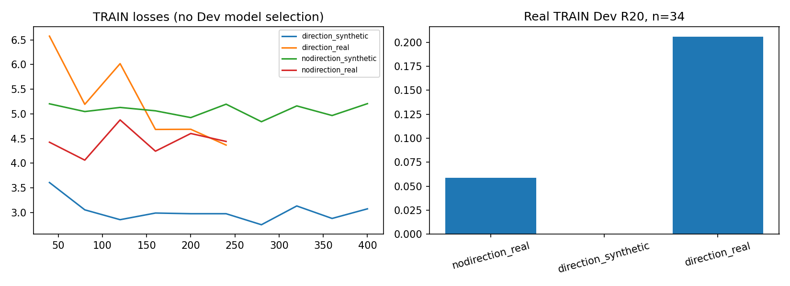
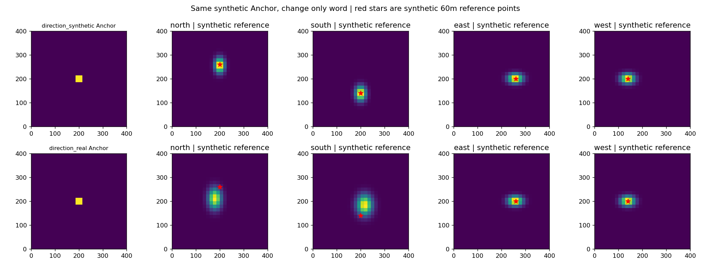
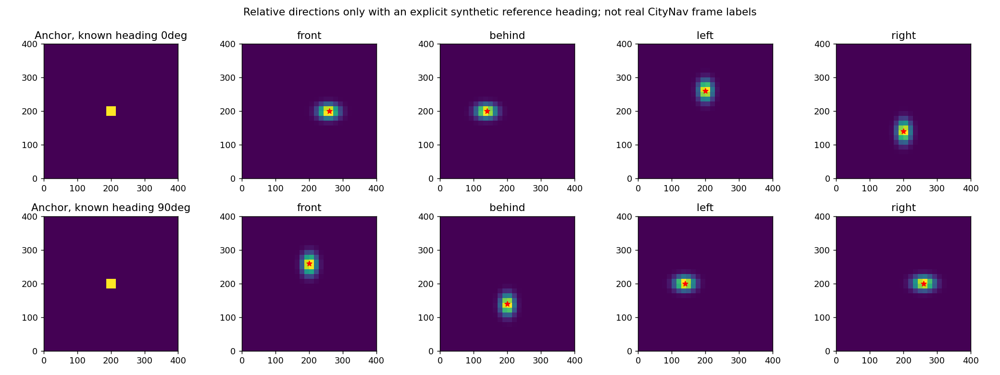
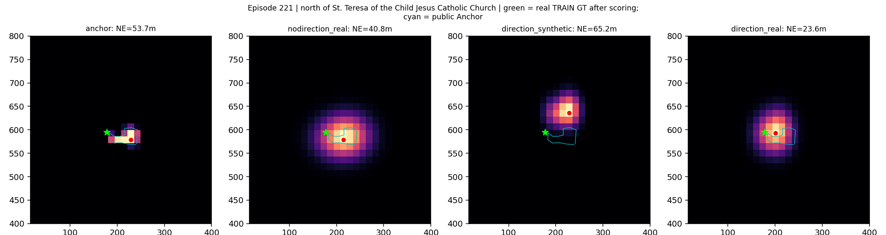
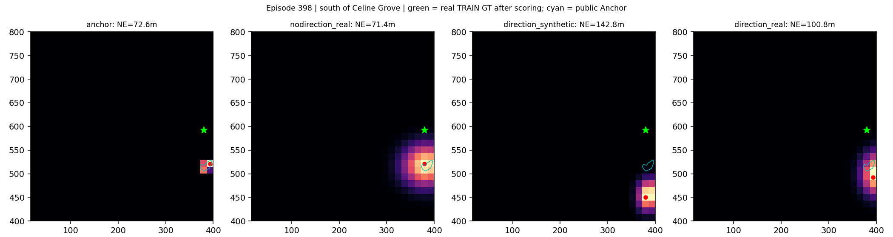
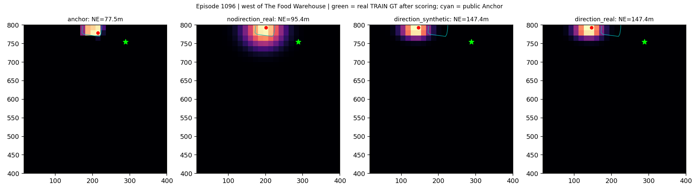
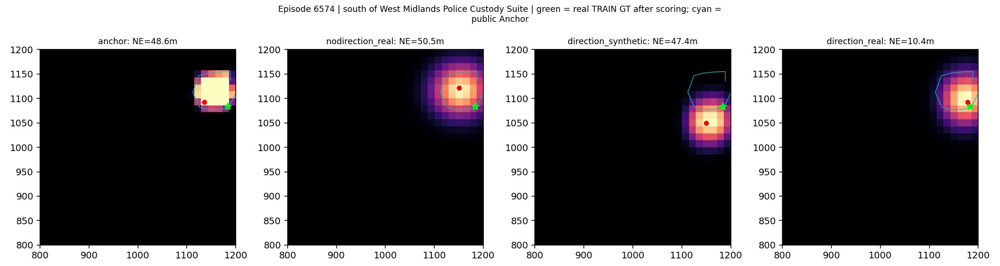
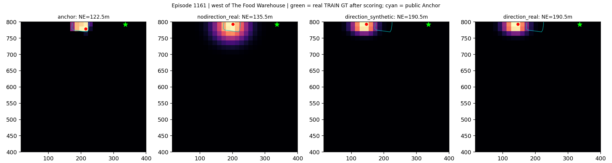

合成机制验证与真实TRAIN评估分开。相对方向需要已知参考朝向；未验证真实地理北。
中文报告


North of St. Teresa of the Child Jesus Catholic Church and to the left of Fill Circle Events & Exhibitions Ltd, this yellow car is in the far bottom right of the parking lot.

South of Celine Grove and to the left of St Teresa's Court, it is a black car, second car left of a red car.

this is a white car and it is in the parking lot of the One Stop building. this car is in the 9th park row west of The Food Warehouse and is the 7th car from the north. The parking spaces to the north and south of this car are empty.

To the south of West Midlands Police Custody Suite, this blue car is near the building, facing a white car.

this is a black car and it is in the parking lot of the One Stop building. this car is in the 14th parking row west of The Food Warehouse and is the 1st car from the south. To the north of this car is another black car, to the south there is no car.
